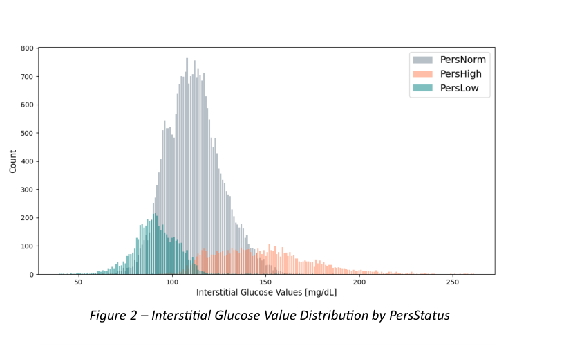
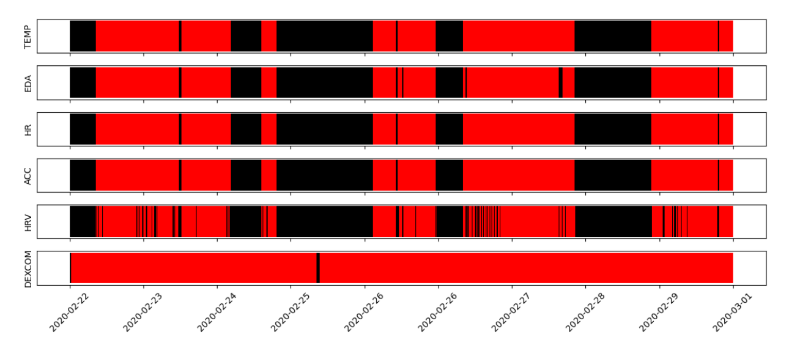
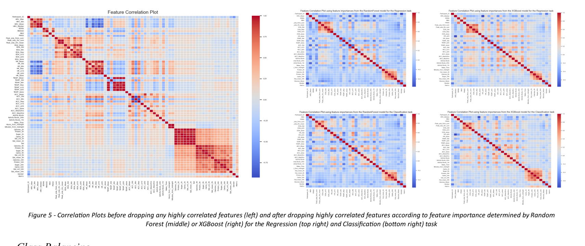
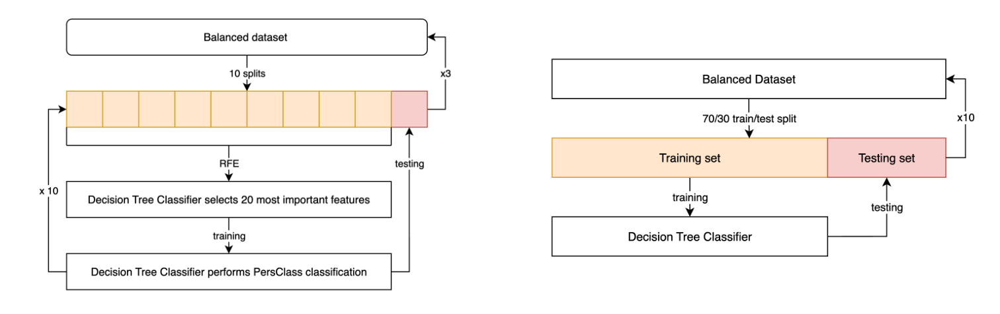
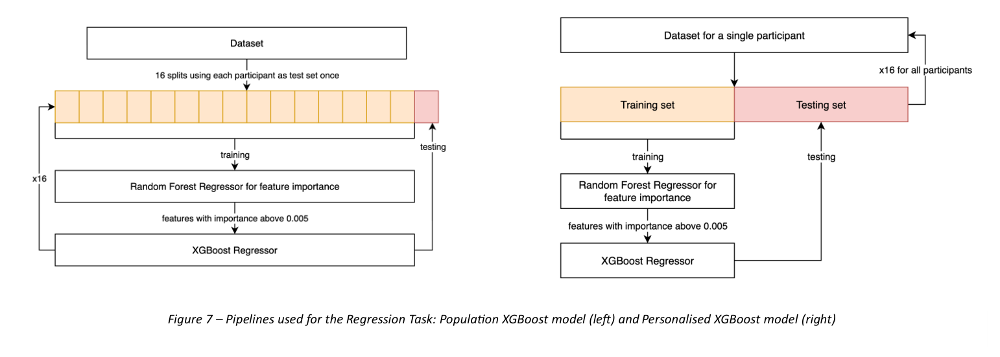

Artificial Intelligence for Glucose Level Prediction using Wearable Device Data with and without A Food Log
A machine learning study investigating whether wearable devices can predict blood sugar levels without an invasive glucose sensor, and whether adding a food log as a data source improves accuracy.
Background
Diabetes is a metabolic condition in which the body cannot properly regulate blood sugar, affecting 830 million people worldwide. Continuous glucose monitoring (CGM) devices allow people to track blood sugar in real time, which helps with managing diet, medication, and lifestyle. However, these devices require a sensor to be placed under the skin and cost between $100 and $400 per month.
Wearable devices such as smartwatches already measure a range of physiological signals that reflect how the body responds to changes in blood sugar. Using these signals to predict glucose levels could offer a noninvasive and more accessible alternative to current monitoring devices, and could also support early detection of prediabetes, which is frequently undiagnosed.
This project investigated three prediction approaches of increasing complexity and assessed whether adding a food log as a data source improves model performance.
Dataset
The dataset used was the publicly available BIG IDEAs Lab Glycaemic Variability and Wearable Device dataset (Physionet). It contains data from 16 participants in the normal to prediabetic blood sugar range. Over 8 to 10 days, each participant wore a continuous glucose monitor and a wrist-worn wearable device, and kept a food log.
The glucose monitor recorded blood sugar levels every 5 minutes. The wearable wristband measured heart rate, skin conductance, skin temperature, and physical movement. Food logs recorded the timing and nutritional content of meals.
Each glucose reading was labelled relative to that individual's own recent average, falling into one of three categories: above average (PersHigh), below average (PersLow), or within normal range (PersNorm). Using personal rather than fixed thresholds accounts for the fact that healthy blood sugar ranges vary between individuals.

Data Preprocessing & Feature Extraction
From the raw wearable data, 46 physiological features were calculated, capturing patterns in heart rate variability, skin conductance, temperature, and movement. A further 20 features were derived from the food log, and demographic information including sex, a standard measure of long-term blood sugar control (HbA1c), and time of day were also included.
Data availability was checked across all sensor streams for each participant. Any reading where data was missing from at least one sensor was discarded, to ensure all features were computed from complete information. After filtering, the dataset contained 26,267 labelled data points.

Feature Engineering & Correlation Analysis
Before training the final models, feature importance was analysed to determine which sensor signals were most predictive of blood sugar. This was done separately for the classification and regression tasks, using a validation approach that ensured each participant's data was held out as a test set at some point.
Features that were highly correlated with each other were then removed to reduce redundancy, keeping only the more informative of any two overlapping signals. This resulted in final feature sets of 27 to 32 inputs. Food log features were retained throughout this step so their contribution could be assessed in the final models.

Three Prediction Tasks


Results
Across all models, the most predictive signals were skin conductance, physical activity, and time of day, reflecting how deeply blood sugar is tied to the body's daily rhythms and stress responses. Biological sex and long-term blood sugar control level were also highly predictive, consistent with known differences in glucose metabolism between individuals.
For classification, TabPFN achieved the highest accuracy at up to 88.2%, outperforming the decision tree models. Dropping food log features actually improved accuracy by up to 4%. For regression, the personalised model reached up to 84.5% accuracy, while the population model achieved a lower average prediction error. The forecasting model reached 92.0% accuracy for predictions 6 hours ahead.
The most practically significant finding was that removing food log data did not meaningfully affect accuracy in the regression or forecasting tasks. This suggests that a wearable device alone, without any dietary tracking, could be sufficient for continuous glucose monitoring. Results from SeqFusion, which achieved 97.2% accuracy without any training on this dataset, further demonstrated the potential of applying general-purpose AI models to health monitoring tasks where labelled data is limited.